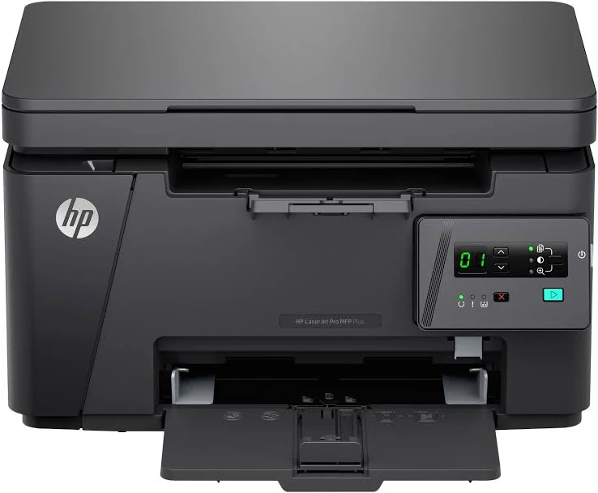
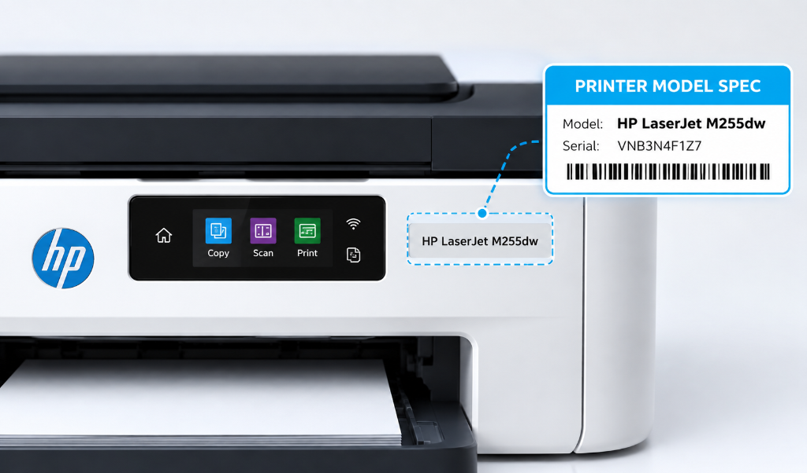
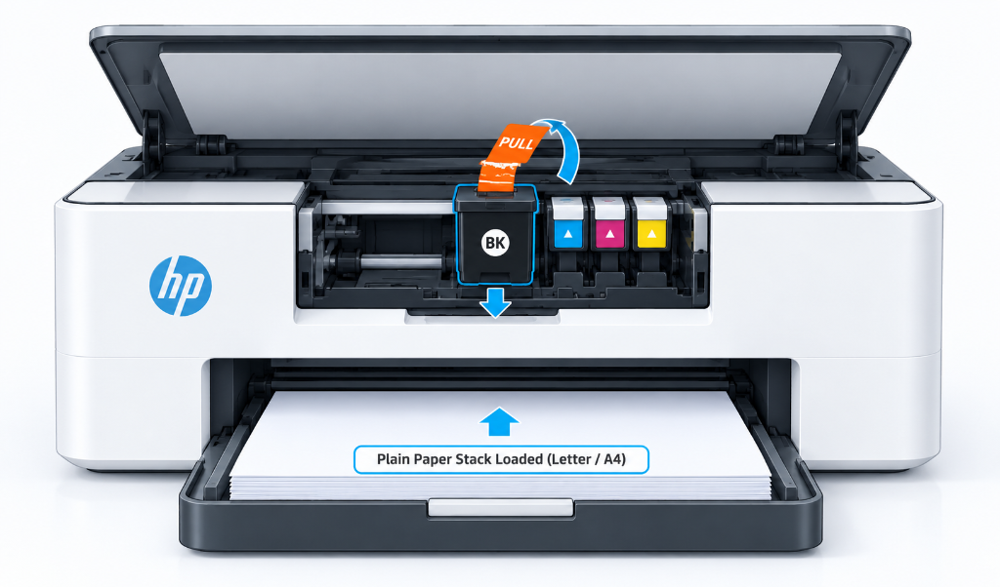
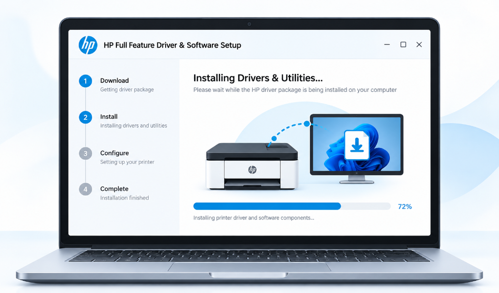
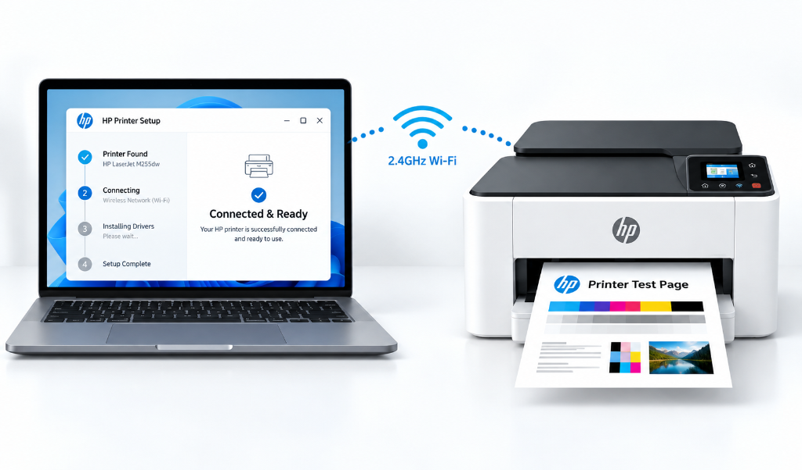

Set up your printer
and start printing today.
Welcome to the centralized printer setup and driver software portal. Access complete installation manuals, exact driver setup packages, wireless network connection protocols, hardware preparation checklists, and step-by-step diagnostic fix procedures for Windows 11, Windows 10, macOS, ChromeOS, iOS, and mobile device platforms.

Step-by-step printer setup guide
Follow this comprehensive 4-stage setup manual to unpack, configure, install drivers, and verify printing across all your devices.
Locate and identify your printer model
Accurate driver installation and hardware setup begin with identifying your exact printer model number. Printer model designations are specifically formatted to ensure full compatibility with operating system driver packages.
Where to find your model number:
- Front Panel & Display Console: Printed directly on the front bezel, near the power button, or on the LCD display panel.
- Cartridge Access Compartment: Open the front or top door where ink cartridges or toner units are seated. The serial number badge is located inside.
- Rear Specification Label: Located on the back or bottom frame of the printer alongside power ratings and MAC address badges.
- Network Configuration Report: Press and hold the Information button (i) or Wireless button to print a hardware status page detailing exact model name and IP address.


Unbox and prepare printer hardware
Proper hardware unpacking and physical preparation prevent paper jams, ink cartridge seating faults, and carriage movement obstructions during first startup.
Hardware preparation checklist:
- Remove Protective Tapes: Clear all bright orange shipping tape, protective plastic shields, and internal foam guards from the scanner glass and ink carriage path.
- Connect Power Cable: Connect the supplied power cord directly into a grounded AC wall outlet. Avoid ungrounded extension cords or overloaded surge strips during initial startup.
- Install Ink Cartridges or Toner: Power on the printer, open the ink access door, and insert ink cartridges into their color-coded slots until they snap firmly into position. Ensure orange protective cap strips are peeled off completely.
- Load Paper Tray: Pull out the paper input tray, slide the width and length paper alignment guides outward, insert plain letter or A4 paper, and adjust guides snugly against the paper stack without bending edges.
Download and install driver software
Installing the recommended driver software package equips your computer with print queue control, scanner utilities, ink level monitoring, and duplex printing features.
Driver installation types explained:
- Full Feature Driver & Software Package: Provides complete functionality including print drivers, scanner drivers (TWAIN/WIA), Optical Character Recognition (OCR) software, and status alerts. Recommended for all primary workstation computers.
- Basic Print Driver (INF / PCL): Lightweight print-only driver for enterprise networks, virtual desktop environments, or older operating system installations where advanced scanning software is not required.
- Universal Print Driver (UPD): Single driver solution designed for managing fleet printers across managed corporate network environments.
- Firmware Update Utility: System updates that refine wireless network handshaking, security protocols, and internal printer engine performance.


Establish connection and verify test print
Connect your printer to your preferred communication interface (Wireless Wi-Fi network, direct USB cable, or wired Ethernet LAN) and complete diagnostic test page alignment.
Connectivity options:
- Wi-Fi Wireless Setup (2.4GHz Band): Press the Wireless button on your printer control panel. Use WPS (Wi-Fi Protected Setup) button on your router or enter network credentials via setup software.
- Direct USB Connection: Connect a high-speed USB 2.0/3.0 A-to-B cable between the printer and computer. Do not connect USB cable until instructed by setup software installer wizard.
- Wired Ethernet Network (RJ45): Insert a standard CAT5e/CAT6 network cable from your router into the printer Ethernet port for instant IP address assignment via DHCP.
- Print Alignment Test Page: After connection completes, print an alignment sheet to calibrate color heads and verify print quality.
Having trouble printing? Follow the 8-step fix checklist.
Work through these checks in order to identify common printer power, connection, software, paper, ink, and print-quality issues. Start with the basic checks and move through the checklist before changing any advanced printer settings.
Check the printer power
Make sure the printer is switched on and receiving power before checking other parts of the setup.
- Confirm that the power cable is securely connected to the printer.
- Check that the other end is firmly connected to the power outlet.
- Make sure the printer's power indicator or display is active.
- If the printer does not respond, try a known working power outlet.
- Avoid repeatedly disconnecting and reconnecting the power cable while the printer is starting.
Check the printer status
Look at the printer display, indicator lights, or status area for messages that may prevent printing.
- Check for warning or error messages.
- Confirm that the printer shows a ready or idle state.
- Check whether the printer is paused or showing an attention notification.
- Open the printer status window on the connected computer when available.
- Resolve any visible paper, ink, toner, or connection warning before sending another print job.
Check the printer connection
Confirm that the connection between your device and printer is active and stable.
- For Wi-Fi: Confirm printer is connected to intended wireless network, check device network and wireless status.
- For USB: Confirm USB cable is securely connected, try another compatible USB port, avoid damaged cables.
- For network printers: Confirm printer remains connected to local network and has not gone offline.
Check ink or toner
Low or incorrectly installed ink or toner can prevent normal printing or affect print quality.
- Confirm the required cartridges or toner are installed correctly.
- Check the printer's ink or toner status.
- Make sure protective packaging has been removed from a newly installed cartridge where applicable.
- Reinstall the cartridge if the printer reports an installation or recognition issue.
- Replace an empty cartridge or toner supply when required.
Check paper and paper path
Incorrectly loaded paper or a paper obstruction can interrupt printing and may cause incomplete or failed print jobs.
- Make sure the correct paper size is loaded.
- Align the paper stack correctly inside the tray.
- Do not overfill the paper tray.
- Check the visible paper path for an obstruction.
- Remove any loose or incorrectly positioned sheet carefully.
- Confirm that the selected paper size matches the paper loaded in the printer.
Restart the printer
A normal restart can clear temporary communication or printer state issues.
- Finish or cancel any active print job.
- Turn the printer off using its normal power control.
- Wait briefly before turning it back on.
- Allow the printer to complete its startup process.
- Confirm that it returns to a ready state.
- Send a simple test print after the printer is ready.
Check printer software and driver setup
The computer must have the appropriate printer software or driver for the selected printer model and operating system.
- Confirm that the correct printer is selected on the computer.
- Check that the printer software is installed for the intended printer model.
- Make sure the selected printer is not an old or duplicate entry.
- Check whether the printer appears offline in the system settings.
- If the installation package needs to be installed again, use the package intended for the exact printer model and operating system.
Print a test page
A test page is the final practical check to confirm that the printer can receive and process a basic print job.
- Make sure the printer is ready.
- Confirm paper is loaded.
- Send a simple test page.
- Check whether the printer starts the print job.
- Inspect the output for missing text, lines, faded areas, or other quality problems.
- If the test page prints correctly, retry the original document.
Operating system setup instructions
Detailed installation procedures for Windows, macOS, ChromeOS, iOS, and mobile platforms.
Windows 11 & Windows 10 Setup
- Download the recommended full feature installer package matching your model number.
- Right-click setup file and select Run as Administrator.
- Choose connection method (Wi-Fi Wireless or USB cable) when prompted by installer wizard.
- Open Settings > Bluetooth & devices > Printers & scanners and set printer as default.
macOS Sonoma & Ventura Setup
- Ensure Mac and printer are connected to the same Wi-Fi router network.
- Open System Settings > Printers & Scanners on your Mac.
- Click Add Printer, Scanner, or Fax button (+ icon).
- Select your printer from AirPrint list and click Add to complete setup.
ChromeOS, iOS & Mobile Setup
- Connect mobile device or Chromebook to printer Wi-Fi Direct SSID or router network.
- On iOS devices, tap Share > Print and select your AirPrint enabled printer.
- On smartphones and mobile tablets, enable Mopria Print Service in System Print settings.
- On Chromebooks, open Settings > Advanced > Print & scan to discover network printer.
Install drivers and printer software
Follow these instructions to download matching driver packages and configure software for your model.
Identify exact printer model number
Enter your printer model in the Identify tool to obtain verified driver links.
Download recommended driver package
Select executable setup package for Windows (.exe) or disk image installer for macOS (.dmg).
Execute installation wizard setup
Open downloaded file, accept license terms, and complete screen prompts for port selection.
Connect hardware & verify print test
Complete wireless pairing or USB cable plug-in, and print an alignment test page.
Frequently asked printer setup questions
Find clear answers to common questions about printer installation, software setup, wireless connections, printing, and everyday printer configuration.
Printer installation & setup
Get your printer ready from the first connection through software installation and your first test print.
Locate the model name or product number printed on the printer. It is commonly found on the front panel, top surface, control panel, or a product label. Enter the exact model information during setup to make sure the appropriate installation package is selected.
Place the printer near a suitable power source, remove all packaging materials, install the required ink or toner, load compatible paper, and turn the printer on. If you are using Wi-Fi, keep the printer within a reliable range of your wireless network during setup.
Start the printer setup process and select the software package provided for your printer model and operating system. Run the installation package and follow the setup instructions. Depending on the printer, you may be asked to connect the printer through Wi-Fi, USB, or another supported connection method.
Printer software availability depends on the specific printer model. Common supported platforms include Windows and macOS, while some printers also provide setup and printing options for Android and iOS devices. Always use the software or setup package intended for your printer model and operating system.
The setup is generally complete once the printer has been connected, the required software has been installed, and the printer is ready to receive print jobs. Printing a test page is a useful final check because it confirms communication between the device and printer.
Turn on the printer and open its wireless or network setup option. Select your Wi-Fi network and enter the network password when requested. Keep the printer within a stable wireless range while the connection is being established. After connecting, confirm that the printer shows an active network connection.
First check that the correct printer is selected on your computer or mobile device. Confirm that the printer is powered on and ready, then check the connection and print queue. Make sure paper is loaded and that there are no visible warning messages. If the problem continues, restart the printer and send a new test print.
Check the printer status and open the print queue on your device. Cancel any failed or stalled jobs, then confirm that the printer is still connected. Restarting the printer can clear temporary communication problems. After the printer becomes ready, send the document again.
Confirm that the printer is powered on and connected through the intended connection method. For Wi-Fi printers, make sure the printer and device are using the appropriate network. For USB connections, check the cable and port. Restarting both the printer and the device can also help establish a fresh connection.
Check the paper type and paper loading first, then inspect the ink or toner level and printer status. Make sure the selected paper settings match the loaded paper. If the output remains incorrect, check the printer software settings and run a test page to determine whether the issue affects the printer itself or a specific document.
Connection, printing & common fixes
Find practical answers for Wi-Fi, USB, print jobs, paper, ink or toner, and common printing problems.
Need additional help with your printer?
Find practical printer setup information, installation guidance, connection instructions, diagnostic checklists, and software resources in one place. Choose the guide that matches the stage of your printer setup or the issue you are currently experiencing.
Printer setup guides
Follow the complete setup process from identifying your printer model to preparing the hardware, installing the required software, connecting the printer, and completing a first test print.
- Identify your printer
- Prepare the printer
- Install printer software
- Connect the printer
- Complete the first test print
Connection guides
Get practical guidance for connecting your printer through supported connection methods and keeping the printer available to your device.
- Wi-Fi connection
- USB connection
- Network connection
- Printer connection checks
- Offline printer checks
Diagnostic & fix guides
Work through structured checks for common power, paper, ink or toner, connection, software, and printing problems before changing advanced settings.
- Printer not printing
- Printer offline
- Connection problems
- Paper problems
- Ink or toner checks
- Print quality checks
Software & installation resources
Find information about printer software, driver installation, operating-system compatibility, installation preparation, and completing the printer setup process.
- Software installation
- Driver setup
- Operating-system setup
- Installation preparation
- First print verification